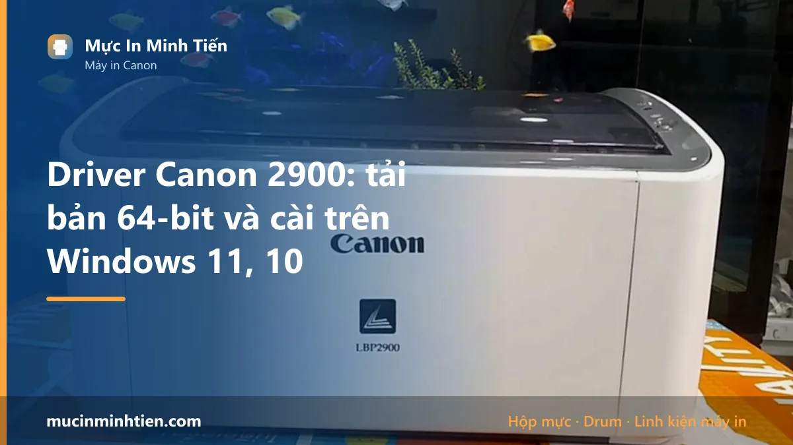
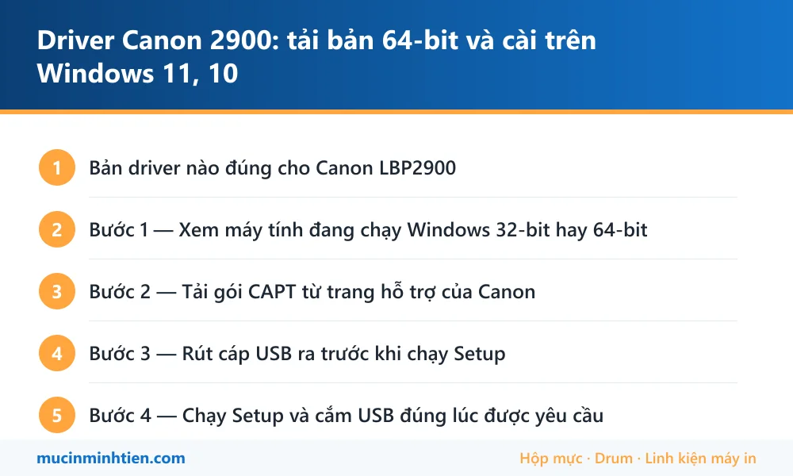

Driver Canon 2900: tải bản 64-bit và cài trên Windows 11, 10

Canon LBP2900 và LBP2900B dùng chung driver CAPT; bản 64-bit mới nhất Canon còn phát hành là R1.50 Ver.3.30, file LBP2900_R150_V330_W64_uk_EN_2.exe, dung lượng khoảng 10,9 MB. Cài đúng thứ tự: rút cáp USB ra, chạy Setup, khi trình cài đặt yêu cầu mới cắm USB vào.
Tải driver ở đâu cho an toàn: chỉ tải từ trang hỗ trợ của hãng. Trang này không lưu trữ và không phát tán file cài đặt — driver trôi nổi trên các trang chia sẻ là đường lây mã độc phổ biến nhất trong môi trường văn phòng, vì file cài driver chạy với quyền quản trị.
Trang tải chính hãng: Canon Việt Nam — Drivers, phần mềm & firmware · Trang driver CAPT 64-bit cho LBP2900/2900B
Bản driver nào đúng cho Canon LBP2900
Chọn sai bản là nguồn gốc của phần lớn ca cài mãi không xong. Đối chiếu bảng dưới trước khi bấm tải.
| Hạng mục | Chi tiết |
|---|---|
| Tên driver | CAPT Printer Driver (Canon Advanced Printing Technology) — không phải UFR II như các dòng cao hơn |
| Bản 64-bit | R1.50 Ver.3.30 — file LBP2900_R150_V330_W64_uk_EN_2.exe, khoảng 10,9 MB |
| Ngày hãng cập nhật | 14/02/2017 — đây là bản cuối, Canon không ra bản mới cho dòng này nữa |
| Hệ điều hành hãng liệt kê | Windows XP, Vista, 7, 8, 8.1, 10 và các bản Windows Server 64-bit |
| Windows 11 | Không có trong danh sách của Canon, nhưng bản Windows 10 64-bit chạy được — xem mục cài bằng Have Disk bên dưới |
| Kết nối | Chỉ USB 2.0. Máy không có cổng LAN, không có Wi-Fi — muốn nhiều máy dùng chung phải chia sẻ qua một máy tính |
| Hộp mực | Canon Cartridge 303 — cùng phôi với HP 12A (Q2612A), in khoảng 2.000 trang ở độ phủ 5% |
Hai nhầm lẫn khiến nhiều người tải mãi không đúng file: LBP2900B không có driver riêng (cùng gói với LBP2900), và bản 32-bit không cài được lên Windows 64-bit — trình cài đặt sẽ chạy tới cuối rồi báo lỗi mà không nói rõ lý do.
Bước 1 — Xem máy tính đang chạy Windows 32-bit hay 64-bit
Bấm phím Windows + I → System → About, đọc dòng System type. Máy văn phòng mua từ 2015 trở lại đây gần như chắc chắn là 64-bit. Nếu ghi 32-bit operating system thì phải tải gói W32, không dùng được gói W64 ở trên.
Bước này mất 15 giây nhưng bỏ qua thì mất cả buổi: phần lớn ca “cài hoài không được” mà chúng tôi nhận ở văn phòng khách đều là tải nhầm kiến trúc.
Bước 2 — Tải gói CAPT từ trang hỗ trợ của Canon
Vào trang tải của Canon Việt Nam, gõ LBP2900, chọn hệ điều hành gần nhất với máy mình (Windows 11 chưa có thì chọn Windows 10 64-bit), tải mục CAPT Printer Driver.
- File tải về là dạng .exe tự giải nén, không phải bộ cài. Chạy nó, nó bung ra một thư mục, trong đó mới có
Setup.exe. - Trong thư mục bung ra có hai thư mục con
x64và32bit— nhớ đường dẫn thư mụcx64, bước cài tay ở dưới sẽ cần. - Đừng tải driver từ các trang chia sẻ file. File cài driver chạy với quyền quản trị, đây là đường lây mã độc phổ biến nhất trong môi trường văn phòng.
Bước 3 — Rút cáp USB ra trước khi chạy Setup
Đây là bước bị làm sai nhiều nhất, và chính Canon ghi rõ trong hướng dẫn: khi cài qua USB phải rút cáp ra, cài xong driver mới cắm lại.
Lý do: nếu cáp đang cắm, Windows tự nhận máy in bằng driver tạm của nó và chiếm luôn cổng USB. Trình cài đặt của Canon sau đó không gán được cổng, kết quả là máy in hiện trong danh sách nhưng lệnh in nằm chờ mãi không chạy.
Máy in vẫn để nguyên nguồn, chỉ rút đầu cáp USB.
Bước 4 — Chạy Setup và cắm USB đúng lúc được yêu cầu
- Bấm chuột phải
Setup.exe→ Run as administrator. - Chọn Install with USB Connection, bấm Next tới khi hiện cửa sổ yêu cầu cắm cáp.
- Lúc này mới cắm cáp USB vào máy tính và bật máy in. Cắm thẳng vào cổng sau máy tính, không qua hub USB và không qua cáp nối dài — LBP2900 kén nguồn USB, qua hub hay bị nhận rồi mất.
- Đợi Windows chạy xong phần cài thiết bị, biểu tượng Canon LBP2900 sẽ xuất hiện trong Printers & scanners.
Bước 5 — In thử và đặt làm máy in mặc định
Vào Settings → Bluetooth & devices → Printers & scanners → Canon LBP2900 → Printer properties → Print Test Page. Trang test in ra là xong phần máy tính.
Bật Set as default nếu văn phòng chỉ có một máy in — tránh việc lệnh in bay sang “Microsoft Print to PDF” rồi tưởng máy hỏng.
Nếu trang test in ra mờ, sọc hoặc trắng trơn thì phần mềm đã xong, lỗi nằm ở hộp mực hoặc cơ khí — xem mục cuối bài.
Cài trên Windows 11 khi Canon chỉ liệt kê tới Windows 10
Canon dừng cập nhật driver dòng này từ 2017 nên bảng hệ điều hành không có Windows 11. Bản W64 vẫn chạy, chỉ là đôi khi Setup.exe tự thoát giữa chừng trên Windows 11. Khi đó cài tay bằng Have Disk:
- Cắm USB, bật máy in.
- Settings → Printers & scanners → Add device, đợi hết vòng quay rồi bấm Add manually.
- Chọn Add a local printer or network printer with manual settings.
- Ở mục Use an existing port, chọn cổng có dạng USB001 (Virtual printer port for USB). Có nhiều dòng USB00x thì thử lần lượt từ USB001.
- Bấm Have Disk → Browse, trỏ tới thư mục
x64đã bung ở bước 2, chọn fileCNAB4STK.INF. - Chọn Canon LBP2900 trong danh sách hiện ra, đặt tên, bỏ chọn chia sẻ nếu chưa cần, rồi in thử.
Cách này bỏ qua toàn bộ trình cài đặt cũ của Canon nên không phụ thuộc việc bộ cài có tương thích Windows 11 hay không.
Chia sẻ Canon 2900 cho cả văn phòng dùng chung
LBP2900 không có cổng mạng, muốn nhiều máy in chung thì phải có một máy tính làm máy chủ in — máy đó bật thì cả phòng in được, máy đó tắt là mất.
Trên máy đang cắm máy in: Printer properties → Sharing → Share this printer, đặt tên chia sẻ không dấu, không khoảng trắng (ví dụ Canon2900). Vào Advanced sharing settings bật Network discovery và File and printer sharing, đặt mạng đang dùng là Private.
Trên máy con: mở Run (Windows + R), gõ \\tên-máy-chủ rồi Enter, bấm đúp vào máy in hiện ra. Windows sẽ hỏi driver — trỏ vào thư mục x64 như cách Have Disk ở trên.
Máy con không thấy máy chủ thì gần như luôn là do hai máy khác dải mạng, hoặc mạng đang để chế độ Public. Trường hợp cần chạy ổn định lâu dài, dùng hộp print server USB hoặc đổi sang máy có cổng LAN sẽ đỡ phiền hơn nhiều.
Lỗi thường gặp khi cài Canon LBP2900 và cách xử lý
| Hiện tượng khi cài | Nguyên nhân thật | Cách xử lý |
|---|---|---|
| Trình cài đặt chạy tới cuối rồi báo lỗi, không hiện máy in | Tải nhầm gói 32-bit cho Windows 64-bit | Gỡ sạch bằng Uninstaller trong thư mục driver, tải lại gói W64 rồi cài lại |
| Máy in hiện trong danh sách nhưng lệnh in nằm chờ mãi | Cổng in đang trỏ sai (USB002 trong khi máy nằm ở USB001) | Printer properties → Ports → tick lại đúng dòng USB00x có tên Canon LBP2900 |
| Cắm USB nhưng Windows không nhận thiết bị | Cắm qua hub USB, cáp nối dài hoặc cáp đứt ngầm | Cắm thẳng vào cổng USB sau thùng máy, đổi cáp khác thử |
| Cài xong, in thì hiện lỗi "Không thể in" hoặc cửa sổ trạng thái đứng im | Dịch vụ Print Spooler treo | Mở Services, khởi động lại Print Spooler; xoá sạch lệnh in cũ trong hàng đợi |
| Máy in báo Offline dù đã bật | Windows đang bật Use Printer Offline, hoặc máy ngủ USB selective suspend | Bỏ tick Use Printer Offline; tắt USB selective suspend trong Power Options |
| Bản in ra ký tự lộn xộn, ký hiệu lạ | Driver sai model (đang dùng driver dòng khác hoặc driver universal) | Gỡ hết, cài lại đúng gói CAPT của LBP2900 |
| Sau khi cập nhật Windows thì máy in biến mất | Windows Update thay driver bằng bản của nó | Cài lại bằng Have Disk, sau đó tắt tự động cập nhật driver trong Device installation settings |
Canon LBP2900 dùng mực gì, giá bao nhiêu
Cài xong driver là lúc nhiều người phát hiện hộp mực đã gần cạn. Canon LBP2900 dùng Cartridge 303, cùng phôi với HP 12A nên vật tư rất sẵn và rẻ. Đây là các thứ hay phải thay trên dòng máy này:
| Vật tư | Dùng cho | Ghi chú khi mua |
|---|---|---|
| Hộp mực Canon 303 (tương đương 12A) | LBP2900, LBP2900B, LBP3000 | Xem <a href="../../muc-in/hop-muc-12a/">trang mã mực 12A</a> để so chính hãng, tương thích và nạp lại |
| Trống (drum) 12A | Khi bản in có vệt lặp đều theo chu kỳ | Thay riêng trống rẻ hơn thay cả hộp |
| Trục từ 12A | Khi in mờ dần dù mực còn | Mua kèm gạt mực nếu hộp đã nạp nhiều lần |
| Quả đào (lô kéo giấy) và bố thắng | Khi máy kéo nhiều tờ hoặc không kéo giấy | Thay cặp sẽ bền hơn thay lẻ |
| Cụm sấy (lô sấy, bao lụa, lô ép) 12A | Khi bản in chạm tay ra mực, hoặc kẹt giấy ở cuối đường đi | Đọc mã trên cụm cũ trước khi đặt hàng |
Toàn bộ vật tư cho Canon LBP2900 có sẵn tại kho 77 Bắc Hải, Phường Diên Hồng, TP.HCM — xem bảng giá 773 mã, hoặc gọi 0986 704 260 đọc đúng tên model để lấy đúng mã.
Cài xong rồi mà bản in vẫn lỗi
Driver chỉ quyết định máy tính có nói chuyện được với máy in hay không. Khi lệnh in đã chạy mà trang in ra xấu thì lỗi nằm ở vật tư hoặc cơ khí bên trong máy:
- Canon 2900 kéo nhiều tờ giấy — quả đào và bố thắng mòn
- Canon 2900 bị sọc đen dọc — gạt mực hoặc trống đã tới hạn
- Canon 2900 chạy liên tục không dừng — cảm biến hoặc lệnh in kẹt
- Canon 2900 không nhận hộp mực — tiếp điểm bẩn hoặc lẫy an toàn
- Máy in không in được, báo Offline — lỗi nằm ở phía Windows
